Photo gallery
2020.09.23 19:43
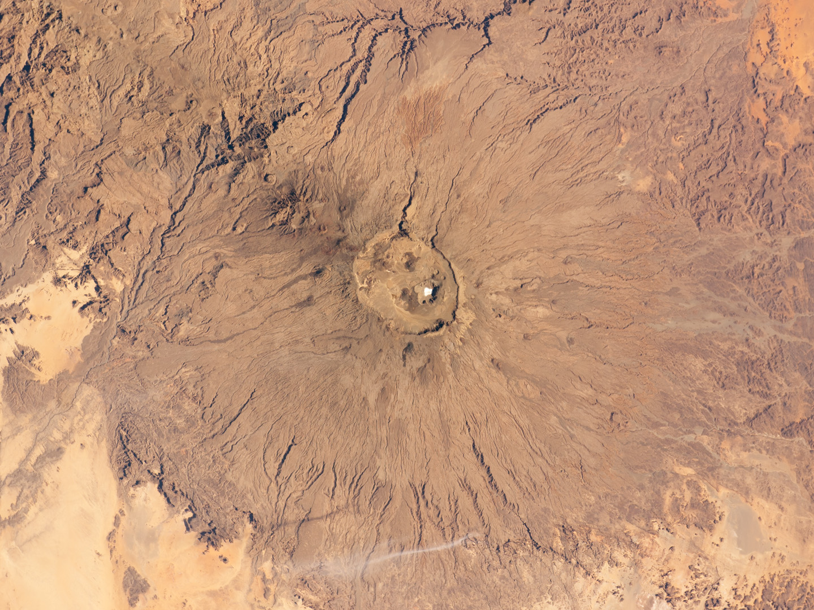
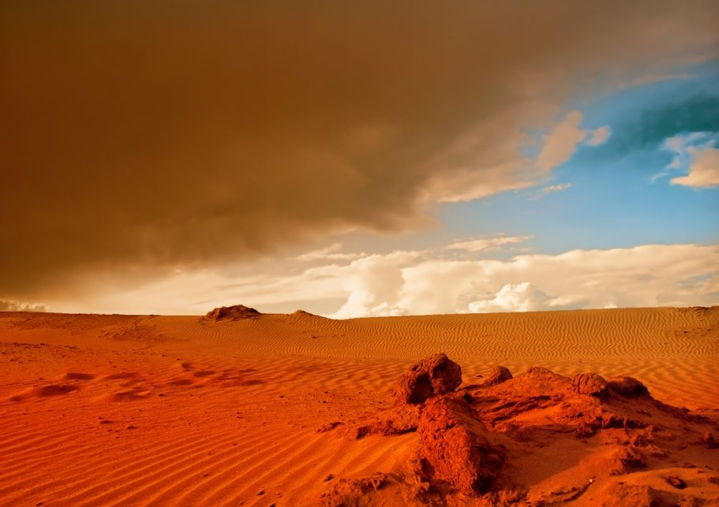

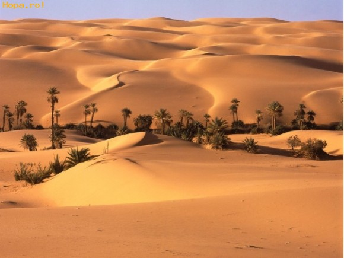
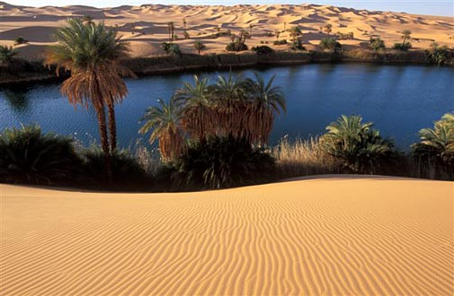


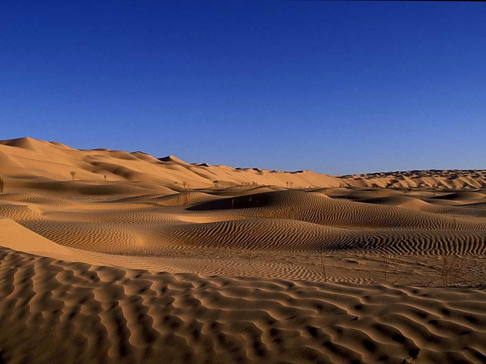


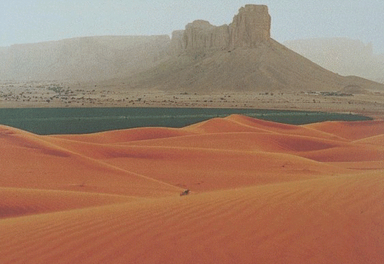


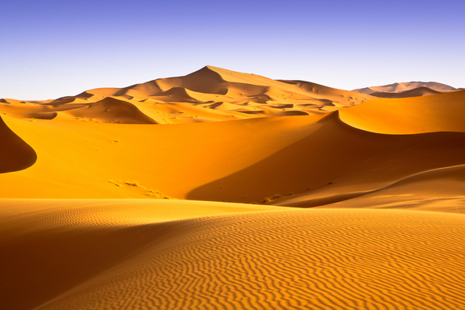


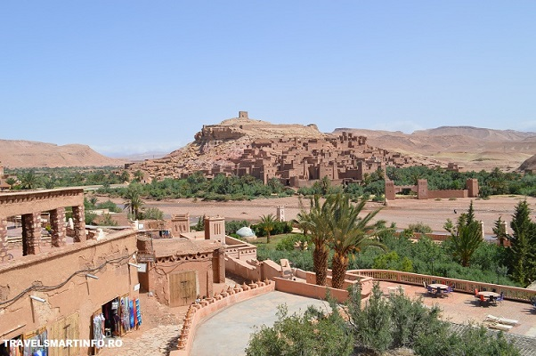

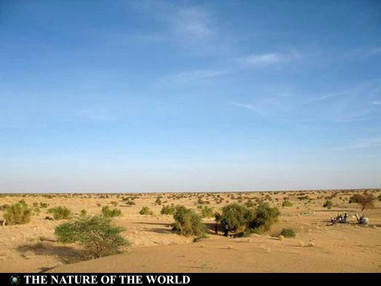
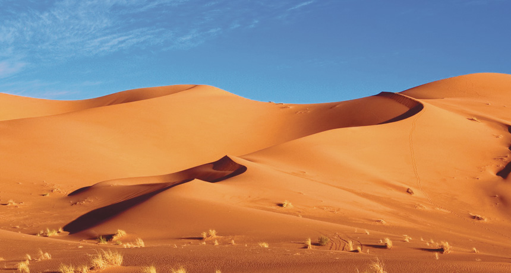

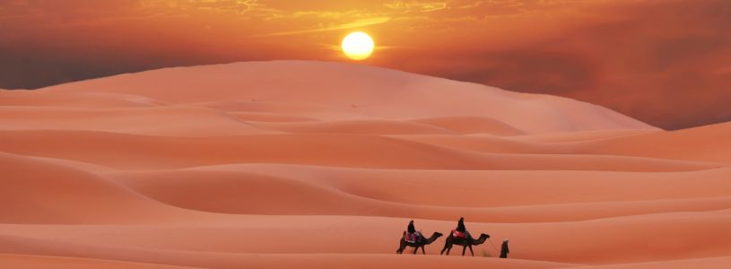
- Desertul Sahara - referat.clopotel.ro.doc - Nume si ...
Sahara cu cele 9.000.000 km² este deşertul cel mai mare de pe Pământ. Ea cuprinde o treime din Africa, aproximativ suprafaţa Statelor Unite ale Americii, sau de 26 ori mai mare decât suprafaţa Germaniei. Acest deșert uscat se întinde de la ţărmul Oceanului Atlantic până laMarea Roşie alcătuind un trapez cu o lăţime în vest de ... - O Noapte in Desert – din Marrakech in Sahara - Travel Mood
Sahara, cel mai mare deşert, are o suprafaţă de 8 800 000 km2 (după alte surse 8 400 000 km2 sau 9 065 000 km2) - mai mare decât întreg continentul - Sahara Olteniei, deșertul apărut pe 100.000 de hectare în ...
Sahara este o regiune endoreică, lipsită de cursuri de apă permanente, rețeaua hidrografică fiind reprezentată prin ueduri, care se umplu cu apă în timpul ploilor ocazionale. Munții din Sahara sunt: Hoggar, Tassili n'Ajjer și Tibesti cu vârful Emi Koussi (3415 m), și sunt de asemenea gropi (cratere) făcute de meteoriți, cea mai ... - Desertul Sahara - Referat.ro
Sahara acoperă o parte din mai multe natiuni africane , inclusiv Algeria, Ciad, Egipt, Libia, Mali, Mauritania, Maroc, Niger, Sudan și Tunisia.Cea mai mare parte din desertul Sahara este neamenajat si are o topografie variată.Cele mai multe dintre peisajul său a fost în formă de-a lungul timpului de vânt și include dune de nisip, mările de nisip numite erg, platouri de piatră ... - Ce Animale Trăiesc În Deșertul Sahara? | 2020
Desertul Sahara. OLYMPUS DIGITAL CAMERA. Sahara este cel mai mare desert din lume si acopera parti masive din Africa de Nord. Peste 4 milioane de oameni locuiesc aici; desertul are o lungime de 4.800 km de la vest la est, si 1.200 km de la nord la sud. - DESERTUL SAHARA - TERRA (Planeta Pamant)
370 Imagini gratuite de Desertul Sahara. 516 500 48. Deşert Maroc. 541 654 47. Deşert Dune. 160 221 25. Desert Nisip. 165 151 14. Deşert Maroc. 197 254 26. Desert Maroc Dune. 123 152 11. - VIDEO Algeria: A nins in desertul Sahara - International ...
Desertul Sahara “Desertul Sahara nu a fost dintotdeauna o întindere infinită de nisip, ci un ţinut înfloritor,cu vegetaţie abundentă. În ciuda previziunilor sumbre referitoarela extinderea lui, ca urmare a fenomenului de încălzire a planetei, există savanţi care susţin că acest ocean de nisip se va transforma într-un Eden..” - Sahara, cel mai mare desert | AniDeȘcoală.ro
Sahara este desertul cel mai mare de pe Pamant avand 9.000.000 km 2.Desertul cuprinde o treime din Africa, aproximativ suprafata Statelor Unite ale Americii sau de 26 ori mai mare decat suprafata Germaniei. Desertul se întinde de la Oceanul Atlantic în Vest, până la Marea Roşie în Est; în Nord este limitată de Munţii Atlas şi Marea Mediterană, iar în Sud se extinde până în ... - 10 lucruri mai puțin cunoscute despre deșertul Sahara
Daca esti deja in Maroc, fa o excursie din Marrakech in desertul Sahara, unde iti poti sfarsi ziua dormind sub stele. ... Surprinde nuanțele calde și suflarea dogoritoare a deșertului într-o experiență care te duce de la Marrakech în Sahara, unde poți călători asemenea beduinilor și îți poți sfârși ziua dormind sub stele. - Cu Dacia in desertul Sahara - RedBull.com
Desertul Sahara găzduiește o gamă incredibilă de specii care sunt bine adaptate pentru a supraviețui în climatul pustiu. 70 speciile de mamifere, speciile aviare 90, speciile de reptile 100 și câteva specii de păianjeni, scorpioni și alte forme de viață mai mici, numesc deșertul Sahara casa lor. În afară de cămilă și de capră dromedar, deșertul găzduiește scorpionul cu ...